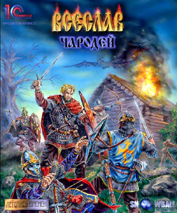

 |
|
| В конце октября Snowball Interactive завершает самый большой проект этого года, которому было отдано восемь месяцев упорной работы без единого выходного или праздника: мы заканчиваем тестировать стратегию реального времени на территории Древней Руси XII века «Всеслав Чародей: Клан Драгомира». Опубликуют «Всеслава» наши партнеры из компании 1С, вместе с которыми мы и задумали всю серию «Летописи Времен» в начале этого года. Действие игры разворачивается на Руси XII века, в долине славного города Дедославля. В процессе разработки мы постарались органично соединить достоверные сведения об одежде, вооружении и укладе жизни Древней Руси тех славных времен с нашим достаточно вольным фэнтезийным сторилайном. Таким образом невероятная история противостояния Всеслава и Драгомира развивается на фоне абсолютно достоверного мира XII века. Не будем же отвлекать вас от изучения мира «Всеслава», созданию которого мы посвятили все силы нашей студии. Мы постараемся дополнять представленные выше пять разделов тем чаще, чем ближе дата выхода Всеслава в свет. Пожалуйста, не стесняйтесь присылать нам любые свои комментарии по этому проекту. |
|
| Текст и
иллюстрации (c) 1997 Snowball Interactive Entertainment, Inc. Перепечатка или распространение любым другим способом без предварительного письменного разрешения правообладателя недопустимо. |
|